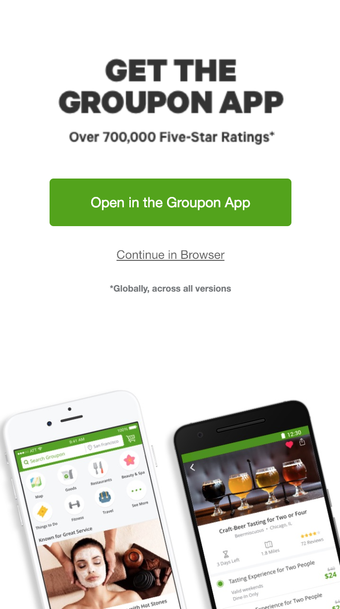
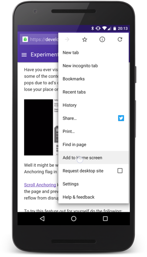
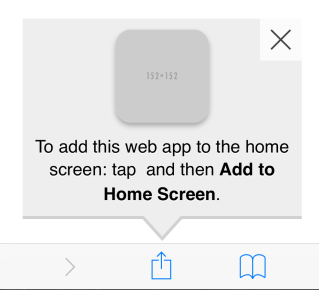

Progressive Web Apps & You
Braving the Offline Web

Agenda
- What's a PWA?
- Service Workers
- Web App Manifests
- Related Technologies (Electron/Cordova/React Native)
- Q & A
What's a great web experience?
😃 PWAwesome
- Engaging
- Reliable
- Fast
😭 PWAwful
- Confusing
- Buggy
- Slow

this is not a great web experience
What's a PWA?
A progressive web app is
a web application
that leverages modern browser technology
to act and feel like a native app,
but with the reach of the web.
Don't think of a PWA as a new thing you have to write from scratch.
Progressive web apps are about making your web experience awesome.
A PWA...
- Works offline and on "Lie-Fi"
- Push notifications and background sync
- Added to desktop/homescreen
- Loads without traditional browser UI
- Treated as a separate application by the OS
Resilience
Service Workers
Service Worker
- Works offline and on "Lie-Fi"
- Push notifications and background sync
- Added to desktop/homescreen
- Loads without traditional browser UI
- Treated as a separate application by the OS
A service worker is
a special type of web worker
that can control network traffic
and run in the background.
Implications
Site must be on HTTPS
With great power comes great responsibility
You can do some amazing things
Register It
page.js
window.addEventListener('load', async () => {
await navigator.serviceWorker.register('/service-worker.js')
})
service-worker.js
self.addEventListener('install', event => {
// A new service worker is being installed!
console.log('Installing!', event)
})
self.addEventListener('activate', event => {
// The service worker is ready to handle our network traffic!
console.log('Activating!', event)
})
self.addEventListener('fetch', event => {
// The page is fetching something!
console.log('Fetching!', event)
})
Cache Some Cats
service-worker.js
self.addEventListener('install', event => {
// Put a resource into the cache
const cachePromise = caches.open('static-v1').then(cache => cache.add('/cat.png'))
// Delay installation complete until we cache it!
event.waitUntil(cachePromise)
})
self.addEventListener('fetch', event => {
const url = new URL(event.request.url)
// Check if we're requesting our cat image
if (url.origin === location.origin && url.pathname === '/cat.png') {
// If we are, let's serve that kitten from the cache!
event.respondWith(caches.open('static-v1').then(cache => cache.match('/cat.png')))
}
})
Simplest Real Service Worker
const version = '1.1.0'
const cacheName = `pwa-${version}`
self.addEventListener('install', e => {
e.waitUntil(
caches.open(cacheName).then(cache => {
return (
cache
// Add all of our assets to the cache
.addAll([
`/`,
`/index.html`,
`/styles/main.css`,
`/scripts/main.min.js`,
`/scripts/vendor.min.js`,
`/images/image-1.jpg`,
`/images/image-2.jpg`,
`/images/image-3.jpg`,
])
)
}),
)
})
self.addEventListener('activate', event => {
event.waitUntil(
caches.keys().then(allCacheNames => {
// Clear out all the old cache data we won't use anymore
return Promise.all(
allCacheNames.filter(name => name !== cacheName).map(name => caches.delete(name)),
)
}),
)
})
self.addEventListener('fetch', event => {
event.respondWith(
caches
.open(cacheName)
// Try to find the request in the cache
.then(cache => cache.match(event.request, {ignoreSearch: true}))
// Return the cache response or fetch over the network
.then(response => response || fetch(event.request)),
)
})
WARNING
Writing service worker logic is HARD.
The stakes are a lot higher now!
A mistake in your service worker could mean freezing your site in time forever!
Solution: Don't Write It Yourself!

$ npm install -g workbox-cli
$ workbox wizard
? What is the root of your web app (i.e. which directory do you deploy)? src/
? Which file types would you like to precache? ico, png, js, css, json
? Where would you like your service worker file to be saved? src/sw.js
? Where would you like to save these configuration options? workbox-config.js
$ workbox generateSW workbox-config.js
The service worker was written to src/sw.js
17 files will be precached, totalling 109 kB.
Test It
$ npm install -g lighthouse
$ lighthouse https://my-pwa.com --view
Appyness
Web App Manifest
Web App Manifest
- Works offline and on "Lie-Fi"
- Push notifications and background sync
- Added to desktop/homescreen
- Loads without traditional browser UI
- Treated as a separate application by the OS
A web app manifest is
a special JSON file
that declares your site a PWA
and controls how your app looks when installed.
my-app.webmanifest
{
"name": "The Progressive Web App",
"short_name": "PWA",
"icons": [{"src": "/icon.png", "type": "image/png", "sizes": "192x192"}],
"start_url": "/index.html?homescreen=1",
"scope": "/",
"display": "standalone",
"background_color": "#2196F3",
"theme_color": "#2196F3"
}
Link It Up
...
<head>
<title>The Progressive Web App</title>
<!-- way too much stuff Lighthouse complains about :) -->
<!-- ... -->
<link rel="manifest" href="/my-app.webmanifest" />
</head>
...
Test It
$ npm install -g lighthouse
$ lighthouse https://my-pwa.com --view
Your Reward
The Platform Story
| Mobile | Windows | Mac | |
|---|---|---|---|
| Chrome | Full ✅ | Full ✅ | Full* ✅ |
| Safari | Full ✅ | N/A | Partial 🙂 |
| Firefox | Partial 🙂 | Partial 🙂 | Partial 🙂 |
| Edge | N/A | Full ✅ | N/A |
Full = Service Worker and Manifests supported
Partial = Service worker supported but Manifests supported
* = Chrome on Desktop Mac Manifest support is behind a flag, will make its way to stable soon
Related Technologies
Electron/Cordova/React Native
PWA
Uses service workers and manifests to bring native-like capabilities to a website.Pros
- Entirely web ergonomics
- Works everywhere
- PWA is already "installed" on first visit
Cons
- Won't cover 100% of native use cases
- Not all platforms prompt for homescreen
Electron
Uses modified Chromium and Node.js bundle to run your application. If developer-facing, consider using carlo instead.Pros
- Mostly web ergonomics
- Feels just like a native desktop application (Spotify, Slack, VSCode)
Cons
- Desktop only
- Security concerns
Cordova / Ionic / PhoneGap
Uses native web views to run your application in a wrapper.Pros
- Somewhat web ergonomics
- Feature in App Store/Play Store
Cons
- Web views are not browsers
- Mobile only
- Need XCode/Android Studio and native plugins
React Native
Not really a web technology. Lets you use JavaScript to write native mobile and windows apps.Pros
- Uses real native UI components
- Feature in App Store/Play Store
Cons
- App is platform-specific
- Not really the web, cannot reuse as a website
Recap
Poll - What's Next?
- Puppeteer - Automating Chrome for Tests and Profit
- Node Debugging - Debug your mocha & jest tests with your familiar Chrome DevTools
- Real World Cordova - Tips for wrapping your web app for App Stores
- Real World WASM - Lessons Learned from WASM in Production
Q & A
Thanks!
🐦 @patrickhulce
📧 patrick@eris.ventures
Come stop by my office hours Thursday afternoons in Uptown!